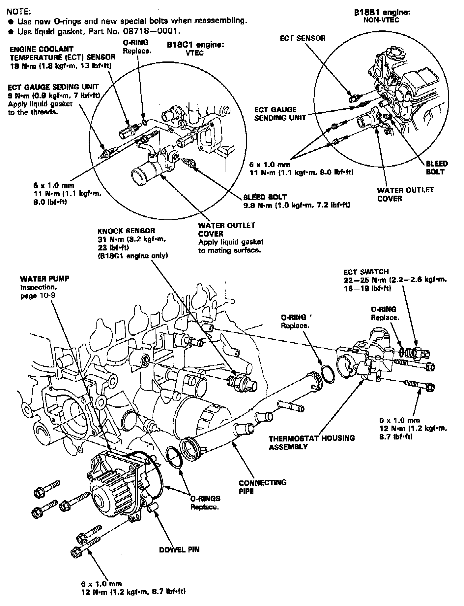

Water Pump Replacement
Replacement:Illustrated Index:

1. Remove the timing belt. Service and Repair
Water Pump Replacement:

2. Remove the camshaft pulleys and the back cover.
3. Remove the water pump by removing five bolts.
Note: Inspect, repair and clean the 0-ring groove and the mating surface of the cylinder block.
4. Install the water pump in the reverse order of removal.
Note:
- Keep the 0-ring in position when installing.
- Clean the spilled engine coolant.